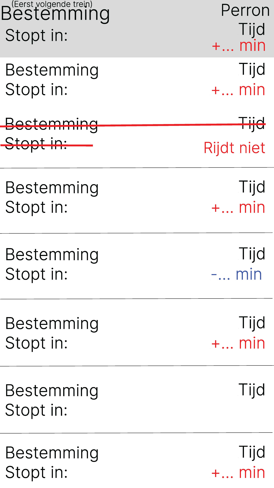
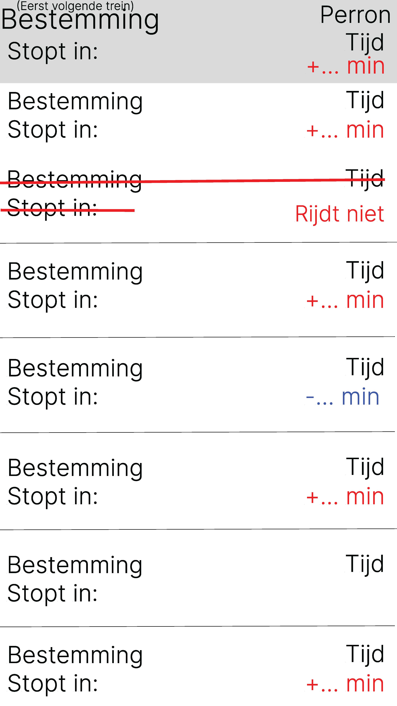

Figma
Low-fi
Documentatie
Na de feedback in week 3 zijn we begonnen in figma. Dit vond ik eigenlijk wel een heel erg interessante app omdat je er heel erg veel mee kan doen. Het was een beetje moeilijk om de uitleg over figma wat te volgen, want luisteren en doen op het zelfde moment was wat moeilijk. Maar ik nam wat notities en heb dan thuis wat verder naar figma gekeken en een beetje uitgezocht hoe het werkte. Ik had de eerste schermen gemaakt, heel erg saai en simpel. Zodat ik even kon uitzoeken hoe het precies werkte. Mijn schermen waren gewoon grijs met met wat instructies wat waar moest komen te staan. Omdat ik nog niet goed wist hoe deze website juist werkte heb ik er nog niet veel kleur ingedaan maar het simpel gehouden. Het was heel erg moeilijk om er alles op te krijgen en leesbaar te houden. Daar moest je ook wel echt aan denken. Aan de leesbaarheid van de schermen. Want ik was genijgd om het lettertype heel klein te zetten zodat alles er op zou passen, maar dan kon je het heel erg moeilijk lezen. Dus dit had ik dan aangepast. Ik propte eerst ook alle talen ergens tussen maar dit maakte het ook heel erg moeilijk om te lezen. Ik heb het daarom maar gewoon in het Nederlands gehouden maar met het idee in mijn achterhoofd dat ik meerdere talen er op kan zetten door bijvoorbeeld een apart knopje om aan te duiden welke taal je wilt.
Foto's
 
